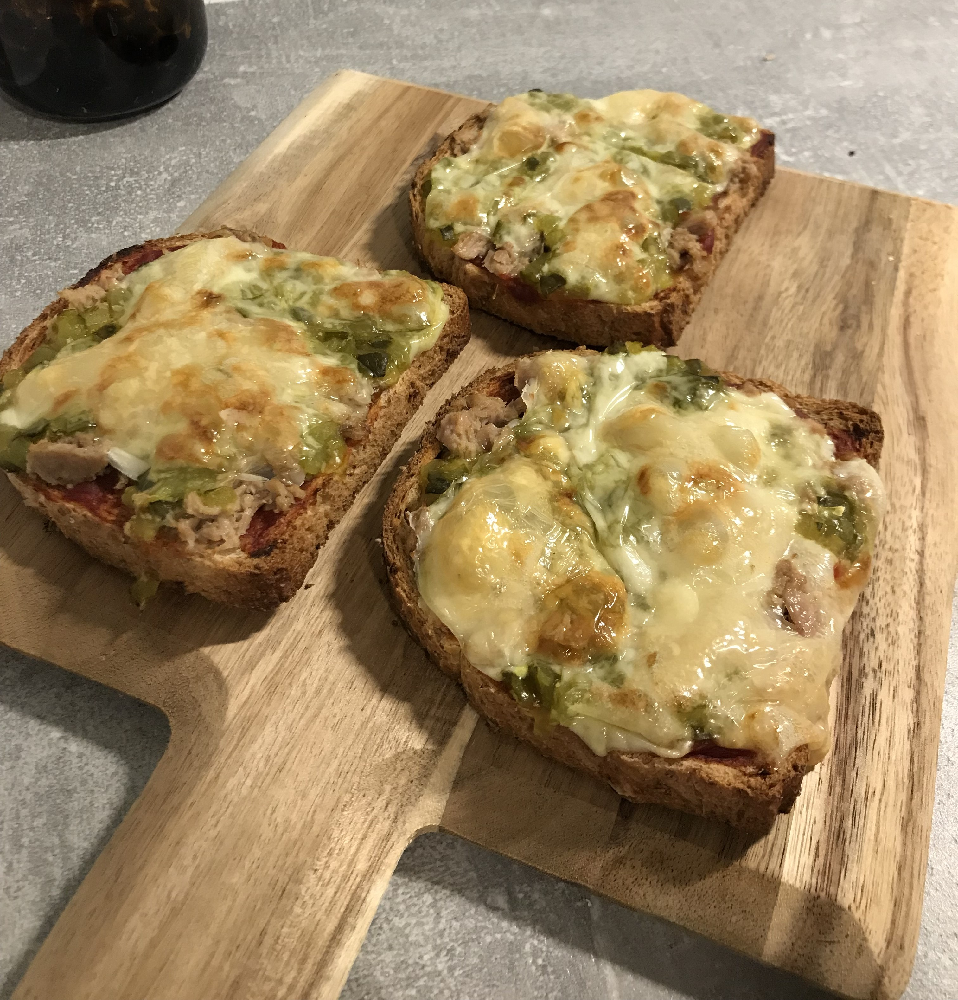

LÄMPIMÄT VOILEIVÄT  Ainesosat Paahtoleipää Ketsuppia Tonnikalaa Amerikkalaista kurkkusalaattia Juustoraastetta Ohjeet Laita uuni lämpenemään 200°C. Aseta leivät leivinpaperille. Asettele täytteet leiville. Paista 200°C:ssa noin 15 minuuttia.